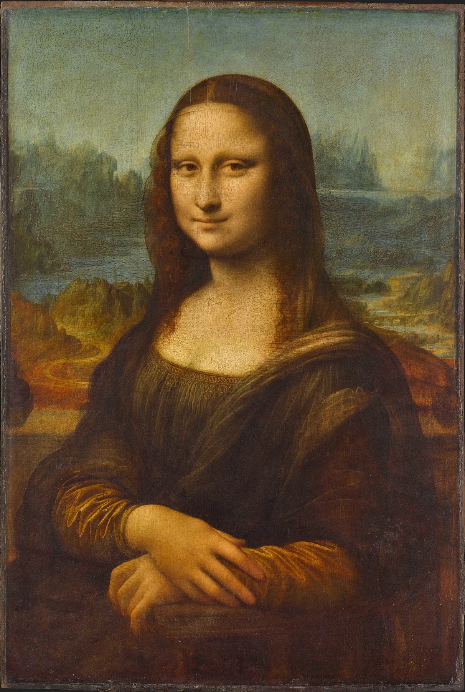

顔 → 組んだ手 → 輪郭のない光と影の順に見る。有名作品ほど「思っていたのと違うところ」を一つ探す。
《モナ・リザ》は、知らない人を探す方が難しいくらい有名な絵です。だから実物を前にしたときも、「あ、本物だ」で終わりやすい。写真で何度も見ている作品ほど、知っているイメージを確認するだけになりがちです。そこで、見る場所を最初から三つだけ決めておきます。

1. 有名すぎる絵は「予想と違うところ」を探す
名画を見るときに役立つのが、「思っていたのと違うところ」を一つ探す方法です。大きさ、色、暗さ、表面、額縁、距離。画集やスマホで作られたイメージと実物の差を探します。
《モナ・リザ》の場合、「もっと大きいと思っていた」「背景が意外と目に入る」「顔より手が気になった」といった小さな違いが、自分の鑑賞の入口になります。有名作品だから特別な感想を持たなければ、と考えなくて大丈夫です。
2. まず顔と視線を見る
最初に瞳と口元を見ます。表情が大きく動いているわけではないのに、見る位置や距離によって印象が少し変わるように感じられます。
「笑っているか、いないか」という答えを決めるより、口角、頬、目のまわりの明暗がどれくらい曖昧につながっているかを見ます。表情の読み取りにくさそのものが、見続けてしまう理由の一つです。
また、目だけを切り取るのではなく、顔全体の明るさを見るのもおすすめです。背景より人物の顔がどのくらい前へ出て見えるか。顔の輪郭が強い線で囲まれていないのに、なぜ人物がそこにいると感じられるのか。そう考えると次の「スフマート」につながります。
3. 顔から、組んだ手へ目を下ろす
顔だけで終わらず、そのまま視線を下へ動かして手を見ます。両手は静かに重なり、人物全体に安定感を与えています。
顔の細かな変化に比べると、手元は大きな形として落ち着いています。上半身の静けさがどこから来るのかを考えるとき、手はかなり重要な場所です。
さらに、顔と手の明るさを比べてみます。画面の上と下に似た明るさが置かれることで、視線が顔だけに張り付かず、人物全体へ動きます。肖像画を「顔だけの絵」として見ないための、いい入口です。
4. 輪郭が煙のようにほどける場所を見る
頬、目のまわり、口元を見ていると、硬い線で「ここから顔」と区切っていないことに気づきます。光と影がゆっくり移り変わり、輪郭がぼやけるようにつながっています。
こうした滑らかな明暗の移行は、レオナルドの絵を見るうえでよく語られるスフマートという方法と結びついています。言葉を覚えるより、まず「線が見えないのに形が見える」場所を探す方が実感しやすいです。
美術用語を先に覚える必要はありません。自分で「輪郭がない」と気づいた後に、「これをスフマートと呼ぶのか」と答え合わせする方が記憶に残ります。
5. 人物全体を大きな三角形として見る
細部から少し離れて、人物全体のシルエットを見ます。頭を頂点にして、肩から腕、組んだ手へ広がる形は、大きな三角形のようにまとまっています。
この安定した形があるからこそ、表情や背景に曖昧さがあっても、人物そのものは落ち着いて見えます。構図を見るときは、服や手を細かく追う前に「全体はどんな大きな形か」と考えると見つけやすくなります。
① 瞳と口元 ② 組んだ手 ③ 頬や目のまわりの境界。余裕があれば、人物全体の三角形まで見る。
6. 人物の後ろの風景まで見る
人物の存在感が強いので見落としやすいですが、背景には道、水、岩山のような風景が広がっています。人物の近さに対して、背景はかなり遠くまで続いて見えます。
左右の風景を見比べると、地平や道のつながり方が単純ではなく、少し不思議な感覚があります。背景を「場所の説明」としてだけ見るより、人物の静けさとは別の、複雑で動く世界として見ると面白くなります。
人物の輪郭も背景と完全に切り離されていません。顔まわりの柔らかな境界と、遠景のぼんやりした空気が呼応し、手前の人物と奥の風景が一枚の画面としてつながっています。
7. 実物の前ではどう見る？
《モナ・リザ》はルーヴル美術館の人気作品で、混雑時には長く正面に立てないことがあります。だからこそ、見るポイントを事前に3つだけ決めておくと使えます。
写真で思っていた大きさ、色、暗さと比べる。
視線をゆっくり縦に動かす。
頬や目の周囲の、線になっていない明暗を見る。
人物の後ろへ視線を抜き、遠景のつながりを見る。
有名な作品ほど、「知っている」という気持ちが鑑賞を早く終わらせます。見る場所を決めておくと、同じ一分でも情報量が変わります。
写真で何度も見た作品ほど、実物では「予想と違ったところ」を一つ探す。それが、自分で見た記憶になります。
顔だけで終わらず、手と輪郭まで見る。